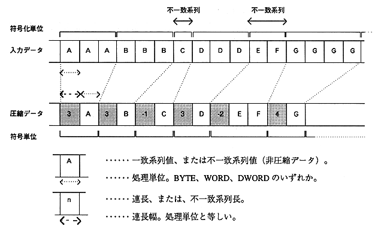

[Expression of run length]
The number of bytes used to express the run length is the same as the number of processing unit bytes.
* The actual amount of data for the run length is interpreted in terms of processing units. In other words, if the processing unit is WORD and the run length is 5, it means encoding processing for 10-byte data.
The following table shows the range of run length values that can be expressed.
Table 1.2 Run length and run length expression
| Run length (matching sequence length) | mismatch sequence length |
|---|---|---|
Expression (description) | Expression (description) | |
BYTE1 byte |  |  |
WORD2 bytes |  |  |
DWORD4 bytes |  |  |
[Image of processing]

Figure 1.2 Run length / mismatch sequence processing